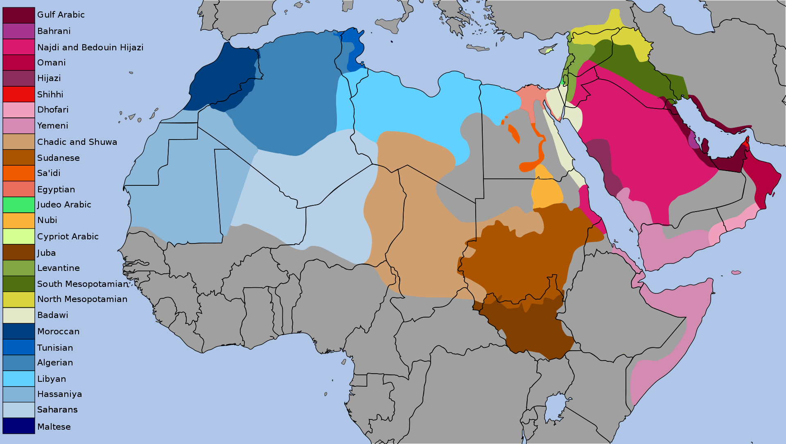

About the Arabic عن اللغة العربية
Arabic, which is the native tongue of more than 200 million people worldwide, ranks 6th among the major languages of the world. Arabic is the official language of Algeria, Egypt, Iraq, Jordan, Kuwait, Lebanon, Libya, Mauritania, Morocco, Oman, Saudi Arabia, Sudan, Syria, Tunisia, United Arab Emirates, and Yemen as well as one of the six official languages of the United Nations. In addition, it is widely spoken in countries such as Somalia and is the language of the holy writings of Muslims throughout the world.
Arabic language History تاريخ اللغة العربية

The Arabic Language has been around for well over 1000 years. It is believed to have originated in the Arabian Peninsula. It was first spoken by nomadic tribes in the northwestern frontier of the Peninsula. In fact, Arabic, means “nomadic.” Arabs (aka nomads), from which the word Arabic is derived, primarily occupied the area between Mesopotamia to the east to the Lebanon mountains in the west, to the Sinai in the south, and from northwestern Arabia to the Sinai in the south. Arabic is a member of the family of Semitic languages. It is specifically a northern Semitic language. Other past Semitic languages included Akkadian also in the north, Hebrew, Aramaic and Syriac to the east and west and Abyssinia to the south. Today, Arabic is the widely spoken Semitic language. Some other native Semitic languages spoken today include: Hebrew, Aramaic, Kurdish, Amharic (spoken in Ethiopia), Tigre (spoken in Eritrea) and Berber (spoken in Morocco and Algeria). Some Semitic languages have either gone extinct or have become greatly limited because of the spread of the Arabic language. Phoenician, the ancient language of modern day Lebanon no longer exist and Coptic, which the dominant language of Egypt is now only spoken in the Coptic Church.
The Arabic language is unique as it technically comprises of multiple varieties, but is commonly classified as one language. As a single language, Arabic is one of the six most spoken languages in the world, comprising more than 400 million speakers. If it is considered a set of different languages, EGYPTIAN ARABIC would be the most widely spoken variety of Arabic. Much of what is known of written, classical (or old) Arabic comes from the events recorded in the Qur’an, the holy book of the Islamic faith. These events are said to have occurred around the 7th century C.E. Prior to the Qur’an, much of the Arabic language was spoken. The Qur’an has served as the basis of the Arabic language to this day. In recent years, the term Modern Standared Arabic (MSA) has come about. MSA is almost identical to the classical, formal Arabic of the Qur’an, with the exception of the addition of modern words and some differences in grammar constructions. MSA is the most common form of Arabic and is the variety taught in schools and colleges and is most commonly used in the workplace, in government and in the media. Over the centuries of its existence, the Arabic language has adopted words from other languages including Hebrew, Aramaic, Persian, Greek, English and French. It has also influenced other languages as well including Turkish, Bengali, Hindi, Indonesian and Tagalog.
The Arabic Language has been around for well over 1000 years. It is believed to have originated in the Arabian Peninsula. It was first spoken by nomadic tribes in the northwestern frontier of the Peninsula. In fact, Arabic, means “nomadic.” Arabs (aka nomads), from which the word Arabic is derived, primarily occupied the area between Mesopotamia to the east to the Lebanon mountains in the west, to the Sinai in the south, and from northwestern Arabia to the Sinai in the south.
Arabic Speaking Countries الدول العربية
There are a total of 25 independent states and territories that has Arabic as their native language. The most populous of these is Egypt. The country of Egypt has a population of around 90 million people. Over 93% of the total population – or over 82 million people – in Egypt speak Arabic, which is the official language of the nation. There are six independent nations where Arabic is either the national language or an official minority language. However, it is not the primary language. In Cyprus, Iran and Turkey, Arabic is a minority language. In Mali, Niger and Senegal, it is the national language. There are also four independent nations where Arabic is officially recognized in the constitution and has a special status. This applies to Iran, Israel, Pakistan and the Philippines. In addition to the independent countries that recognize Arabic as an official language, there are nine non-sovereign entities and regions where Arabic is an official or de facto official language. These regions include Azawad, Iraqi Kurdistan, Islamic State of Iraq and the Levant, Khatumo, Puntland, Rojava, Sahrawi Arab Democratic Republic, Somaliland and the Syrian opposition.